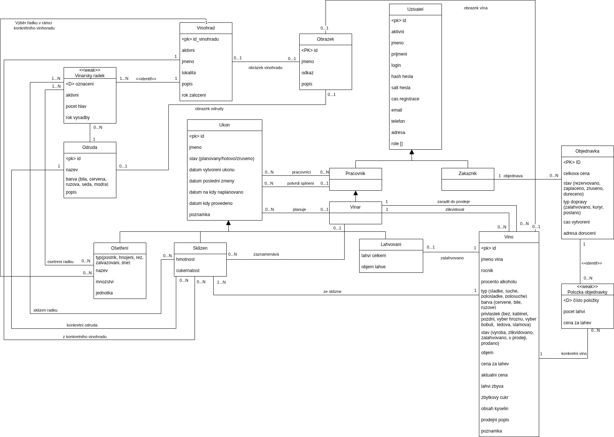
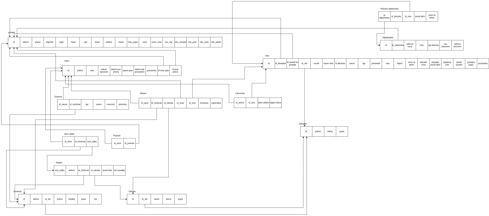

V našem sytému, může mít uživatel vícero rolí. Vícero rolí bylo přidáno, z důvodu toho aby například vinař si nemusel dělat nový účet pro nákup vína. Přidávání a odebírání rolí zůstává umožňuje pouze role Admin.
| Login | Heslo | Role |
|---|---|---|
| andrej | 111111111 | Admin, Vinař, Pracovník, Uživatel |
| josef | 111111111 | Uživatel, Pracovník, Vinař |
| pecinka | 111111111 | Pracovník, Vinař |
| bohumil | 111111111 | Uživatel |
| vacha | 111111111 | Uživatel |
| tabula | 111111111 | Pracovník, Uživatel |
| frejlich | 111111111 | Uživatel |

Přiložte odkaz na komentované video demostrující použití informačního systému. Zaměřte se na případy užití definované zadáním (např. registrace uživatele, správa uživatelů a činnosti jednotlivých rolí). Video nahrajte například na VUT Google Drive, kde ho bude možné přímo spustit z odkazu -> MY VÁM TY VIDEA PŘIVEZEME.
Stručná dokumentace k implementaci, která popisuje, které části projektu (např. PHP skripty) implementují jednotlivé případy použití.


Pro testovací i produkční nasazení je možno využít docker compose.